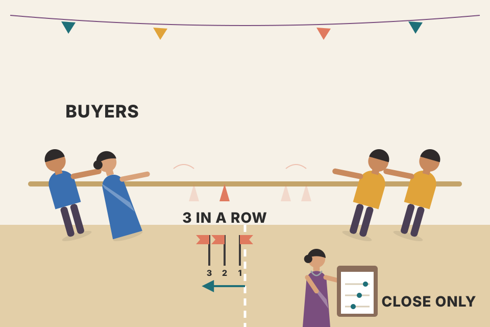
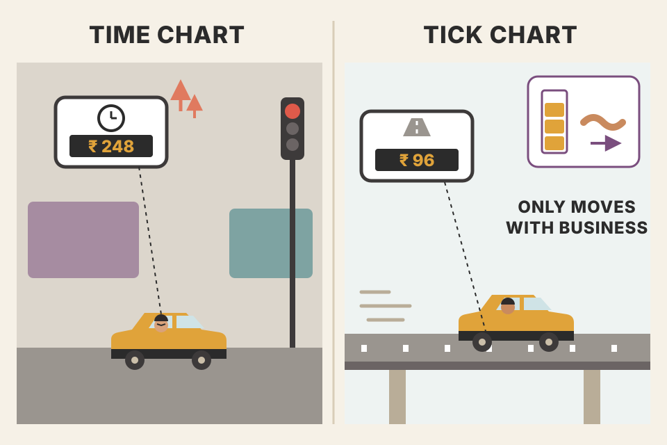
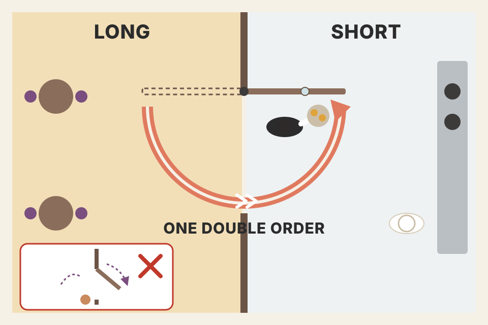
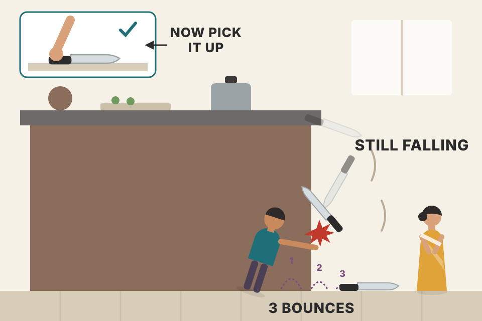

Carter's quickest reversal signal: when a market closes higher three bars in a row, the downswing is probably over, so buy; when it closes lower three bars in a row, sell. A painted bar and a sound alert do the counting for you. This page walks the whole chapter in the book's order: the idea and its filter, the charts he runs it on, why tick charts suit scalping, the five trading rules, all 18 worked trades (index futures, a stock, crude oil and ten forex trades), and how he combines it with pivots. Every chart uses simulated prices. Where a chart replays one of Carter's trades, the entry, exit and stop prices are his and the bars between them are simulated.
One idea, stated in a page, then tested on 18 charts. The order is: what the signal is, how it is filtered, where it is used, which chart type, the rules, the evidence, and how to use it with other setups.
The chapter title asks whether this is the best tool for quickly confirming that a price trend has changed. Carter's answer starts with something he says he has seen over years of watching markets: most reversals happen after three consecutive higher closes or three consecutive lower closes, and this holds on every time frame.

A tug-of-war rope with a marker on it. One tug toward the buyers means nothing: the rope wobbles all day. But if the marker ends each round closer to the buyers three rounds running, the buyers are now winning. Carter only looks at where the marker ends each round (the close), not how far it was yanked during the round (the high and low).
The indicator is a small state machine. Each bar it compares this close with the last close and keeps a streak count. When the up-streak reaches 3 and the last signal was not already a buy, it fires: it paints bar i−2 (the first of the three) and you buy at the close of bar i. Then it waits only for the opposite event. More higher closes in the same direction are ignored, because a buy has already fired.
Why closes? A high or low is one print at one moment; a close is the price everybody holding overnight (or to the end of the bar) agreed to carry. Switch the selector to highs/lows: that version fires on bars that merely poke out and then fall back, so it flips more often in choppy stretches.
Beyond the book: on a pure coin-flip market a run of three same-direction closes starts on about 1 bar in 8, so the signal will fire often there too. The claim that "most reversals" follow such a run is Carter's observation, not something this page can check on real data; section 5 shows what the rule does on simulated markets with and without trends.
He added one filter. In a bull flag (a short, gentle pullback inside an uptrend) prices can make a few lower closes in a row while the uptrend is still intact, and the plain rule would throw him out. So:
The book describes the filter in a few lines, without a formula, so the "price-confirmed" detector on this page is my reading of it: a short needs a close below the low of the latest lower-high bar, and a long needs a close above the high of the latest higher-low bar. Fig 14.8 (the only figure printed in this copy) agrees with it: the painted bars there sit at the swing highs and swing lows.
Someone walking up a staircase with a heavy bag stops and shuffles back half a step three times. Three backward shuffles don't mean they've turned around. You only believe they're heading down when they step below the last step they stood on.
A bull flag drifts down in small steps that overlap the previous bar. Each close is lower, but not lower than the previous bar's low, so the price-confirmed rule never sees a "break". The plain rule only asks "lower than last close?", so it sells in the flag and then has to buy back higher when the trend resumes: one losing round trip.
The cost of the filter: it is stricter about the size of the turn but not slower in general. On simulated bars my reading of it actually fires more often than the plain rule (it doesn't need three bars, just one decisive close), so the two only partly coincide. Treat that as a sign that the book's wording leaves room for interpretation; test whichever version you code on your own data.
| Use | Market | Chart |
|---|---|---|
| Scalping (very fast signals) | E-mini S&P (ES) | 233-tick |
| Scalping | mini-sized Dow (YM) | 144-tick |
| The one or two reversals a day | YM | 5-minute |
| Swing trades | any | 60-minute and daily |
He uses it mainly on stock index futures and the major currency pairs, also on individual stocks he follows, and says it works the same way in any market and any time frame because it uses nothing but price. Rule 1 (section 5) adds: the larger the time frame, the larger the parameters and the potential move.
A coastline looks jagged from a plane and from a beach. The scalper alert reads the same pattern whether one bar is a few seconds or a whole day; only the size of the waves changes.
Combine k small bars into one bar and you get a slower chart of the same market. The rule doesn't change, so it fires roughly k times less often per unit of time, and each trade spans more ground. On a random walk the typical move grows with √k, not k, which is why the daily-chart trades in this chapter are worth tens of points and the tick-chart ones a few. The table pools 200 simulated markets (beyond the book).
backtest_results_summary.md: on NSE, the weekly-chart strategies held up and the intraday ones mostly lost to costs. Faster charts mean more trades, and each trade pays the same charges.A tick chart (not the NYSE $TICK from his tick-fade setup) draws a new bar every N trades. For N he uses Fibonacci numbers: 5, 8, 13, 21, 34, 55, 89, 144, 233, 377, 610, 987, 1,597, 2,584, 4,181 and so on. There is no point testing a 144-tick chart against a 143-tick chart.

A taxi meter. A time meter charges the same per minute whether you're stuck at a signal or flying down the highway. A distance meter charges only when something happens. A tick chart is the distance meter of trading: a bar only "ticks over" when enough business has been done.
Model (not in the book): trades arrive at random at 6 a minute before 9:30 (slider), 130 a minute from 9:30 to 10:30 and 60 a minute after; each trade moves price one ES tick (0.25) up or down, or not at all. Dashed line = 9:30 open.
Price only moves when people trade. A time bar mixes quiet minutes (a handful of trades, almost no movement) with busy minutes (hundreds of trades, big movement), so time-bar returns are a mix of tiny and huge moves: fat tails. A tick bar holds the same number of trades every time, so each bar carries a similar amount of "news". In the simulation the time bars' excess kurtosis is far above 0 (fat-tailed) while the tick bars' is near 0 (close to a normal curve).
For the scalper alert this matters in the quiet hours: a 2-minute chart keeps printing nearly flat bars, and three tiny higher closes are enough to fire. The tick chart prints only a few bars overnight, so it fires far less there.
Beyond the book: the idea that markets run on a "trade clock" rather than a wall clock goes back to Peter Clark (1973, Econometrica, subordinated processes) and Ané & Geman (2000, Journal of Finance, "Order Flow, Transaction Clock, and Normality of Asset Returns"); López de Prado's Advances in Financial Machine Learning (2018, ch. 2) builds tick, volume and dollar bars on it.
$TICK (upticks minus downticks across NYSE stocks) is a different thing; it drives the setup in Ch.9 Tick Fades.A thermostat with a dead band. It doesn't switch the heater on at the first cold minute; it waits until the room has cooled three readings in a row, then switches, and stays switched until three warm readings in a row. You are always either heating or cooling: an "always in the market" switch.
The rules make a stop-and-reverse trend follower: it is always long or short (apart from the 4:10 flat and the daily stop). It gives up the first part of every move (it needs three bars to notice) and the last part (it needs three bars against it to leave). So it only earns when moves run well past three bars. The pooled table shows that on simulated data: clearly positive where the market has trending stretches, about zero minus costs on a random walk, and steadily negative in a range, where each turn comes just after it has entered.
The "no stop" rule intraday means risk is limited only by how far price can run before three closes go against you. The worst adverse move (MAE) column shows how deep simulated trades went against the entry before the exit. Simulated results are not evidence that the setup works on real markets; they show how the rules behave.
Beyond the book: 4:10 p.m. eastern is 1:40 a.m. IST while the US is on daylight time and 2:40 a.m. IST in the US winter.
backtest_results_summary.md: "intraday momentum on Nifty futures: tiny real edge, eaten by ~₹480 charges + slippage". An always-in reversal system trades a lot, so costs decide it. Push the cost slider and watch the expectancy.breakeven_move_fyers.md: an intraday NSE trade in a ₹4,000 stock needs about a 0.08–0.15% move just to cover charges and slippage. That is roughly the cost range on the slider.Pick a trade. The chart replays it: the book's entry, exit and stop prices, with simulated bars between them that obey the same rule (no reversal signal appears until the one he took). The painted bars are where the signal fired.
Oct 5 is a relay with a referee's whistle: short leg, long leg, then the 4:10 whistle ends the race for Carter, while the 24-hour trader keeps running into the dark and finishes 2.75 points better. Carter says the extra run isn't worth an evening of slow, irritating after-hours trading.
He compares these swing trades to owning a rental flat and handing upkeep to a management company: you set it up, then it mostly looks after itself. Intraday trading is running the building yourself.
Date check: the ES trade's exit "paints the July 24 bar", but July 24, 2004 was a Saturday. On a daily chart, three bars closing on Wednesday July 28 start on Monday July 26. The prices are unaffected.
backtest_results_summary.md: your weekly pullback test used a 2.5-ATR stop and a 2R target and was the best-behaved swing system. Carter's daily version has no target at all: the next opposite signal is the exit.This example shows how he flips between long and short within a day. It works best on lower time frames such as a 5-minute or a 233-tick chart. Fig 14.8 (5-minute YM, CBOT) is the one chart printed in this copy: four painted bars, numbered 1, 3, 5 and 7, sit at the swing high, swing low, swing high and swing low, and the even numbers mark the fills.

A swing door. You don't stop it in the middle and then push it the other way; one shove of double strength takes it from fully open one way to fully open the other.
To exit and reverse in one go, send one order for twice your size: long 10, sell 20, and you are short 10. It saves a second order and a second chance of slippage between the two. The four legs: +7, +17, +13 points on the closed trades (+37 points, $185 a contract at $5 a point; my arithmetic), and the last long from 10,173 is open with the chart's last price at 10,183.
He moves to forex, starting with the pair most traders know, the euro against the US dollar.
A pip is the smallest usual step on the price board: 0.0001 for most pairs. On a $100,000 lot each step moves your account by $10, so a 998-pip ride is 998 steps of $10.
What he says about how the pairs move:
A pip is a fixed step in the second currency of the pair. If that currency is the dollar, the step is always $10 a lot. If it is yen or Swiss francs, the step is fixed in yen or francs, and its dollar size floats with the exchange rate, like a price tag written in a foreign currency.
The formula matches his ~$7 (CHF) and ~$18 (EURGBP). His ~$8 for the yen pairs and especially ~$6 for USDCAD are lower than the formula gives at those prices; the book's dollar totals use his own figures, so I show them as stated. Pip counts are unaffected.
Arithmetic check: the July 22 USDJPY trade is printed as +95 pips, but 112.10 − 111.12 = 0.98 = 98 pips, and the book's $784 equals 98 × $8. So "95" looks like a typo.
The book's numbers, with the money column re-computed (points × $ per point, or pips × his $ per pip). This table is my compilation; nothing here is new data.
| # | Market · chart | Side | Entry → exit | Gain | Book $ / contract or lot | Check |
|---|---|---|---|---|---|---|
| 1 | ES · 233-tick | long | 1133.25 → 1138.50 | +5.25 pt | $262 | 5.25 × $50 = $262.50 |
| 2 | ES · 15-min | short, then long | 1137.00 → 1134.00 → 1133.75 | +3.00, −0.25 | not given | $150, −$12.50 |
| 3 | ES · 60-min | long | 1114.75 → 1136.50 | +21.75 pt | $1,087.50 | ✓ |
| 4 | ES · daily | short | 1132.50 → 1096.00 | +36.50 pt | $1,825 | ✓ (stop 1153.50) |
| 5 | YM · daily | long | 9916 → 10,278 | +362 pt | $1,810 | ✓ $5/pt (stop 9809) |
| 6 | KLAC · daily | short | 52.51 → 42.96 | +9.55 | per share | ✓ (stop 53.97) |
| 7 | Crude · daily | long | 43.60 → 49.50 | +5.90 | $5,900 CL · $2,950 QM | ✓ |
| 8 | YM · 5-min | S, L, S, L | 10,176 → 10,169 → 10,186 → 10,173 | +7, +17, +13 | not given | +37 pt = $185 |
| 9 | EURUSD · daily | long | 1.2469 → 1.3467 | +998 pips | $9,980 | ✓ |
| 10 | GBPUSD · daily | short | 1.8837 → 1.8148 | +689 pips | $6,890 | ✓ |
| 11 | GBPUSD · 5-min | long | 1.7696 → 1.7724 | +28 pips | $280 | ✓ |
| 12 | AUDUSD · 60-min | long | 0.7560 → 0.7604 | +44 pips | $440 | ✓ |
| 13 | USDCHF · 60-min | long | 1.2855 → 1.2971 | +116 pips | $812 | ✓ at ~$7 |
| 14 | USDJPY · 120-min | short | 112.85 → 110.40 | +245 pips | $1,960 | ✓ at ~$8 |
| 15 | USDJPY · ? | long | 111.12 → 112.10 | printed +95 | $784 | is 98 pips; 98 × $8 = $784 |
| 16 | USDCAD · ? | long | 1.2169 → 1.2360 | +191 pips | $1,146 | ✓ at ~$6 |
| 17 | EURJPY · 15-min | short | 136.66 → 136.18 | +48 pips | $384 | ✓ at ~$8 |
| 18 | EURGBP · 240-min | long | 0.6912 → 0.6970 | +58 pips | $1,044 | ✓ at ~$18 |
A restaurant's photo menu. Every dish looks perfect because the photographer chose the best plate. These 18 charts show what a good scalper-alert trade looks like; they can't tell you how often you get one.
Every one of the 18 examples makes money overall; the only losing leg in the whole chapter is the −0.25 on Oct 5, closed by the 4:10 rule. That is selection, not a win rate: the book shows no losing whipsaws, no count of signals and no costs. To know the edge you would run the rules over every signal on a fixed period, like the pooled simulation in section 5 but on real data, and compare against a random-entry baseline.
backtest_results_summary.md is that kind of test for your own ideas: in the MACD test, random buy weeks with the same sell rule did as well as the signal. A fair test of this setup would include the same random-entry check.Scalper alerts suit traders who like to buy bottoms and short tops. Shorting a market just because it is "too high", or buying because it is "too low", is foolish. Shorting that high-flyer or buying that total loser after a reversal confirmation from this signal is fine. The signal doesn't mean the exact high or low is in; it means power has temporarily shifted, which is enough reason to step in. The idea is the same on a 5-minute chart or a daily chart, and he likes it because it is pure price action: simple and effective.

A falling knife is still moving; you catch it by the handle only after it has hit the floor and stopped. "It has fallen a lot" tells you nothing about where it lands. "It has bounced off the floor three times" does.
Beyond the book: 400 simulated paths that fall for 25–64 bars and then rise for 50. Entry A buys as soon as price is X% below the top; entry B waits for the first scalper long signal after that point. Every path here does turn, so this flatters both entries; a market that keeps falling would hurt A more and B less (B gets a sell signal and leaves).
"Too low" is a statement about the past (how far it fell). Three higher closes is a statement about the present (buyers are now winning each bar). In the simulation the "too low" buyer almost always enters before the bottom and sits through a further drop; the confirmed buyer usually enters after the bottom, with a much smaller drawdown, at the cost of missing the very low. That is the trade-off Carter describes: give up the exact low in exchange for evidence.
A pivot level is a doorway where traffic often turns around. A scalper alert is someone actually turning around. A U-turn in the doorway is more believable than a U-turn in the middle of the corridor.
Pivots use the Ch.8 formula on the prior session: P = (H + L + C) ÷ 3, R1 = 2P − L, S1 = 2P − H, R2 = P + (H − L), S2 = P − (H − L), R3 = R1 + (H − L), S3 = S1 − (H − L). A signal counts as "against a pivot" here when its painted bar's extreme (the swing low for a buy, swing high for a sell) is within the chosen distance of a level.
On simulated random-walk days, signals at pivots do no better than other signals (see the pooled table): pivots only matter if real traders act on them, and a simulation has no traders. Carter's "very high probability" is his experience on real markets, so it is something to test on real intraday data, not something a simulation can show.
The close is where the bar settles, the price people actually carried; a high or low can be a brief poke that is immediately rejected. Three higher highs can happen inside a bar sequence that keeps closing weak. (Section 1.)
At 12:30, the close of the third bar (10:30, 11:30, 12:30), at the market (1114.75 in the book). The paint marks the start of the pattern, but it is only known two bars later. (Section 6.)
Nothing. Signals alternate: after a buy, only a sell (three lower closes) can show. Same-direction streaks are ignored. (Sections 1, 6.)
Being shaken out of a bull flag by a few small lower closes. For a long, the trigger bar is the first bar with a higher low than the bar before; the signal comes when a later bar closes above the trigger's high, and it paints the low bar before the trigger, the swing low. Three lower closes that don't break the signal bar's low are ignored. (Section 2.)
They speed up when trading speeds up and slow down (fewer false signals) when it is quiet; and floor traders react to the pace of trades, not to an arbitrary 2- or 5-minute clock. (Section 4.)
Volume only: the ES trades far more, and the rule of thumb is higher volume, higher tick count. (Section 4.)
Intraday: no stop; the opposite signal is the exit, plus a forced exit at 4:10 p.m. eastern on charts of 15 minutes or less. Daily: at the low (for a long) of the first bar of the three, the painted bar. (Section 5.)
Sell 12 at the market: 6 close the long, 6 open the short. (Section 8.)
"3½ bucks" (10 lots = a buck) and "one large" (100 pips = one large): $10 × 100 × 35 = $35,000. (Section 9.)
The pip (0.01) is fixed in yen, the quote currency: 100,000 × 0.01 = ¥1,000, which is about $9 at 110. Only pairs that end in USD have a fixed $10 pip. (Section 10.)
Nothing: the examples were chosen to illustrate it. A win rate needs every signal over a fixed period, with costs, compared against a random-entry baseline. (Section 11.)
A range-bound, mean-reverting one. It needs three bars to enter and three to leave, so in a range it buys after the rise and sells after the fall, near each turn. It earns only when moves run well beyond three bars. (Section 5.)
Not because it is "too low", but after a reversal confirmation: a scalper buy signal means power has temporarily shifted, even if the exact low may not be in. (Section 12.)
Wait for a scalper confirmation against a pivot level; or take a pivot trade and look for a scalper confirmation in the same direction, and use a scalper sell signal to exit a long pivot trade. (Section 13.)